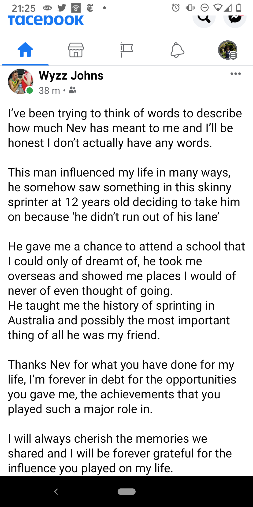

With Neville having died last week, I'm reposting this to the front page on the dayof his funeral which is being held at Olympic Park where a statue of Peter Norman standing on the dais stands.NG
We were thrilled at midnight last night to discover that Neville Sillitoe received an honour. Neville has been around for some time.
He 'discovered' Peter Norman as Norman was running in Princes Park in Melbourne in the 1960s. He won his heat of the 200 metres at the 1968 Olympic Games in Olympic an record time 20.17 which stood for one day before he ran 20.06 in the final, an Australian record that's still not been broken. But of course a second earlier, Tommie Smith's arms were raised in victory as he cruised to a world record 19.83 seconds.
But of course that picture to our right has you remembering that Norman stood in solidarity on the victory dais with his fellow placegetters in the 200 metres as they gave their famous salutes in recognition of black oppression in civil rights America. As you may know, Australian officialdom never forgave Norman this transgression and he missed out on the next games in 1972. He wasn't invited to the Sydney Games in 2000.
Lest we forget.
But I digress. Neville is still talent spotting. Each year he takes a group of the most talented Australian schoolkids he’s identified to Europe for seven weeks. How do I know? He spotted my son Alex in 2013. After going overseas with Neville, Alex has never lost his passion for middle distance running.
Neville is perhaps the last in a long line of Australian coaches going back at least to Percy Cerutty, and Dunera Boy Franz Stampfl who were builders of character first and foremost and on that basis help build the bodies of elite athletes. Should he take his kids to the US the men with whom Norman stood in 1968 Tommie Smith and John Carlos have made it clear they'd love to host them. They were pallbearers at Peter Norman's funeral.
I discovered this thread on Facebook from a former pupil in the late 1 970s.
Then there was Neville Sillitoe. He was a superb PE teacher. Not so if you didn't bring your PE gear. Who remembers the "Sexy Reds" punishment?? hehe. On a serious note this bloke would bring people in like Peter Norman (1968 Mexico Olympic Silver medalist and infamous Black Power incident) Denise Boyd who we raced against in practice. They would speak to us about top-level athletics. I remember holding Norman's silver Olympic medal. This gives you an idea into the class of Sillitoe. … I thank you so much for your work. I will never forget you.
Here he is in the Forres Gazette
Games honour for Aussie stalwart
FORRES Highland Games Secretary Mike Scott presents Neville Sillitoe, from Australia, with an honorary life membership on behalf of the Games committee. Mr Sillitoe is the coach of the travelling Australian Athletes squad and has been bringing a contingent of athletes to Forres to compete for the past 23 years at the event. The young athletes, aged from 10 to around 18 years of age, put up good performances at this year's Games, winning many of the track and field events.
And Neville may have been taking young athletes to Europe for 23 years as a retired PE teacher and athletics coach. But that was written in 2008. So make that 33 years. And make Nevill 92. He's in Europe now with another group of kids! Congratulations Neville!
Australian representatives who Neville coached: Peter Norman (1968 Olympics) Gary Holdsworth (1964 Olympics) Greg Lewis (1968 Olympics) Aaron Rouge-Serret (2 x Commonwealth Games and 2 x World Cup) Colin M'Queen (1977 IAAF World Cup) Denise Boyd (1976 and 1980 Olympics; 1974, 1978 and 1982 Commonwealth Games; 1973 and 1977 Pacific Conference Games; 1977 World Cup and 1983 World Championships) Richard James (1979 World Cup; Bruce Frayne (1984 Olympics) Tamsyn Lewis (1996 World Junior Championships; 1998 Commonwealth Games; 1999 World Indoor Championships; 2000
Yeah seems all rosy, he is an arrogant rude old man that is organising this trip purely for his own benefit. My son is currently on his second Europe tour (7 weeks and 6 athletics meets this time what a joke), this time my wife has gone as well as another poor girl Heather who has become his carer! One boy went home mid tour because of Neville and the others are sick to death of him, he is rude and obnoxious with most people who have seen him in past years cringing to see him again. He may have been great in his hey day but should have stooped years ago. I have known him for a few years now and unfortunately he still thinks methods from years ago still get results. Absolutely disappointed with the feedback I'm getting on this current trip and will be taking matters further regardless of his age.
Ok Murray, well thanks for the feedback. Sorry to hear of your concerns. He was fine with our son three or four years ago. In fact it was one of the catalysts of his current passion for middle distance running.
Nicholas thank you for acknowledging Neville Sillitoe on the occasion of him receiving an Australia Day honour. He is highly thought of in the sporting community and many people were delighted that he was recognised. Although, not everyone in the community shared your enthusiasm. I was quite taken aback to read the mean spirited comments by Mr. Saunders who was scathing with his comments about Neville. This is indicative of how some people in the community show no interest in or respect for the aged, and how Mr Saunders could attack a man in his nineties with such vindictiveness and bile is beyond me. Beware, the silver tsunami is coming.
Danny Finley
(Never met Neville)